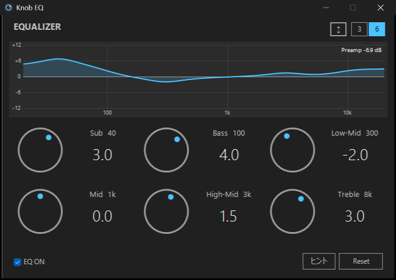
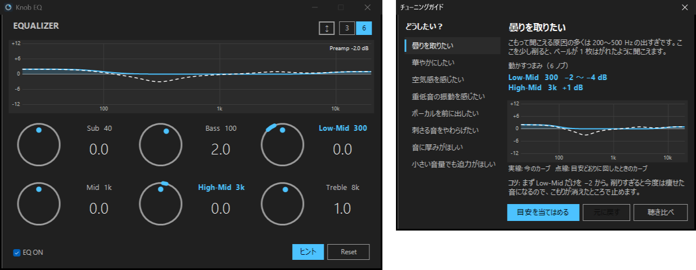
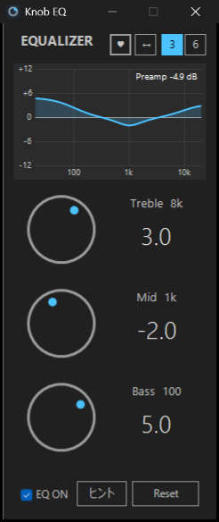
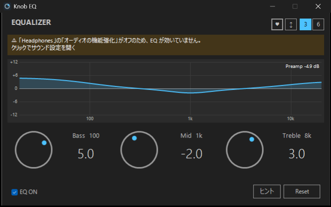

「どうしたい？」から選べる、チューニングガイド
イコライザは「どこを、どれだけ」が分かりにくい道具です。KnobEQ なら、ふだんの言葉で目的を選ぶだけで、回すつまみと目安を画面の上で案内します。

目安のあるつまみが光り、目安どおりに回したときのカーブがグラフに点線で重なります。「目安を当てはめる」で一発設定、「元に戻す」でいつでも元どおり。
特長
難しい数値の入力はいりません。つまみを回して、耳で決めるだけ。
つまみを回すだけ
上下ドラッグかマウスホイールで回すと、その場で音が変わります。ダブルクリックで 0 に戻ります。
目的から選べるガイド
「曇りを取りたい」などの目的を選ぶと、回すつまみと目安を画面の上で案内します。
3 ノブ / 6 ノブ
手軽な 3 ノブ（低音・中音・高音）と、細かく決められる 6 ノブを切り替えられます。
補正カーブが見える
今のつまみで、どの音がどれだけ変わるかをグラフで確認できます。
音割れを自動で防ぐ
持ち上げた分だけ全体の音量を自動で下げて、音割れを防ぎます（Preamp）。
効かない原因を教えてくれる
Windows の設定などで EQ が効かない状態のときは、原因と直し方を画面に表示します。
こだわりのポイント
毎日の音楽や動画が、少しだけ楽しくなるように。
3 つのつまみで、ざっくり好みに
3 ノブモードは、オーディオアンプのトーンつまみのような、低音・中音・高音の 3 つだけ。なだらかに効くように調整してあるので、大きく回しても自然に聞こえます。
もっと細かく決めたくなったら、6 ノブモードへ。モードごとに値を覚えているので、行き来しても設定は消えません。
縦長・横長のレイアウトも切り替えられます。

「効かない」で迷わない
イコライザが効かない原因で多いのが、Windows の「オーディオの機能強化」がオフになっていること。KnobEQ は今の出力先の状態を調べて、EQ が効かないときは原因を表示します。
表示をクリックすると、直すための設定画面がそのまま開きます。

使い方は 3 ステップ
KnobEQ は、定番の無料ソフト「Equalizer APO」と組み合わせて動きます。
-
Equalizer APO をインストール
Equalizer APO（無料）をインストールし、途中の Configurator でふだん使うヘッドホンやスピーカーにチェックを入れます。
-
KnobEQ をダウンロードして起動
ZIP を右クリック →「すべて展開」し、
KnobEQ.exeをダブルクリックします。 -
つまみを回す
回すとすぐに音が変わります。迷ったら「ヒント」から目的を選んでください。アプリを閉じても、設定した音のまま効き続けます。
よくある質問
「Windows によって PC が保護されました」と表示されます
個人が作った、まだ利用者の少ないアプリに表示される確認画面です。ウイルスが見つかったという意味ではありません。「詳細情報」を押してから「実行」を押すと起動できます。ソースコードは GitHub で公開しています。
Equalizer APO は必要ですか？
はい。KnobEQ は、Equalizer APO の設定ファイルを書き換えることで音を変えています。Equalizer APO は、Windows 全体の音にイコライザをかけられる定番の無料ソフトです。
Peace と一緒に使えますか？
はい。KnobEQ は自分専用の設定ファイル（knobeq.txt）を作り、Equalizer APO の config.txt にその読み込みを 1 行追加するだけです。Peace などのほかのソフトの設定には触れないので、ヘッドホンの補正は Peace、好みの味付けは KnobEQ、のように重ねて使えます。
つまみを回しても音が変わりません
画面に注意が表示されていれば、その内容に従ってください（クリックすると設定画面が開きます）。多いのは、Windows の「設定 → システム → サウンド」で出力先の「オーディオの機能強化」がオフになっている場合と、使っている出力先に Equalizer APO が入っていない場合です。音楽アプリが「排他モード」で再生しているときも EQ はかかりません。
音量が小さくなった気がします
つまみで音を持ち上げると、音割れを防ぐために、その分だけ全体の音量を自動で下げています（グラフ右上の Preamp）。Windows の音量を少し上げてください。
料金はかかりますか？
無料です。広告もありません。MIT ライセンスで公開しているオープンソースのソフトです。インターネットへの通信も行いません。
対応している Windows は？
Windows 10 と Windows 11 です。動作に必要な .NET Framework 4.x は Windows に標準で入っているため、追加のインストールは不要です。
やめるとき（アンインストール）は？
Equalizer APO の config.txt から Include: knobeq.txt の行を削除し、同じフォルダーの knobeq.txt と、展開した KnobEQ のフォルダーを削除してください。
もっと知る
ソースコードや、ほかのアプリはこちら。
開発を応援する
気に入っていただけたら、応援していただけると開発の励みになります。いただいた応援は、新しい機能の開発に使わせていただきます。